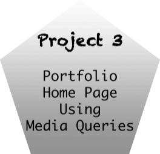

Projects
All Project's Completed!
Complete
This project involved learning how to create a portfolio homepage using media queries to adjust to different screen sizes such as mobile, tablet and desktop displays. While doing this project, I was familiar with creating web pages using html code and css but using media queries on the css style sheet was new to me. So, it was challenging at first but I caught on fairly quickly as I practiced more with the queries.
Project 4 Resume Using Skeleton
Complete
This project involved using my existing resume and incorporating it into the Skeleton CSS responsive boilerplate. I was able to achieve this project with ease using the techniques that I learned in the previous project. Also, the boilerplate that I downloaded had the majority of the basic Skeleton and responsive code for the columns as well as adjusting to display for different screen sizes. Thus making it convenient to add additional html and css code.

Project 5 Flexbox
Complete
This project involved using the flexbox frame to build the webpage. It seemed easy and convenient to use. Just like the Skeleton project, there was a base html and css code to build on with the option to customize. I was pleased with the outcome!
Project 6 Bootstrap
Complete
This project also involved using a frame to build the webpage. The boostrap frame makes it convenient to structure a mobile website first. Since the frame already comes with the CSS and Javascript template, there is already a style. It seemed easy to use but there may be alot of work into customizing the CSS.
Project 7 Sass
Complete
This is another project that uses a frame to build a webpage. The Saas frame can be complex being that it has its own language to convert to CSS. The saas code has to be inputted into an scss file in order for there to be an CSS file. From my perspective, the saas frame seem like it takes too many and unnecessary steps for styling webpages.
Project 8 Industry Exploration
Complete
For this project, I used the flexbox frame to build the webpage. I think this frame is more convenient to use than the others.
Project 9 Git Repository
Complete